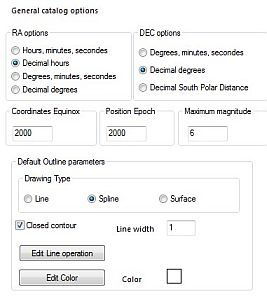
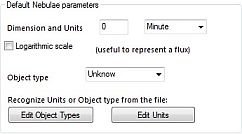
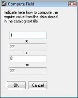

CATGEN
From the menu: Setup → Catalog, then in the dialog, click the CatGen button on the right.
You can download thousands of Catalog text files with data of any kind of celestial objects from the CDS or ADC web site, and other sources. Each one contains the information about a few tens to a many millions of objects.
The objective of this program tool is to convert an ASCII catalog text file to a file that SkyCharts can use efficiently. Due to the large amount of available data, it will be impossible to make a choice that will fit all your needs. When you have a specific interest, you can use CatGen to build your own data set from the original professional catalog data. You also can use any new catalog without delay, as soon as it is published.
For a good performance of your newly built catalog in SkyCharts, you can use CatGen to convert the original text based catalog to a catalog in an organized binary format.
Generally, a catalog is a simple formatted text file. In such a catalog, every single line (a record) contains all the data for one individual object. The data of each line consists of separate pieces (fields) of information. These contain the identifier of the object in the catalog, and also determine the properties of this object. The content of every separate piece of data for every line is simply defined by a column position and a length. For example, consider this:
1 BD+44 4550 3 36042 46 000001.1+444022000509.9+451345114.44 2 BD-01 4525 6128569 235956.2-010330000503.8-003011 98.33 3 33 PscBD-06 6357 281285721002I Var? 000013.0-061601000520.1-054227 93.75 4 86 PegBD+12 5063 87 917012004 000033.8+125023000542.0+132346106.19
At certain fixed positions, there is a fixed type of information. Usually a companion file (Readme) describes the file format with all the necessary details. Detailed information about this file is here .
Byte-by-byte Description of file: catalog.dat -------------------------------------------------------------------------------- Bytes Format Units Label Explanations -------------------------------------------------------------------------------- 1- 4 I4 --- HR [1/9110]+ Harvard Revised Number = Bright Star Number 5- 14 A10 --- Name Name, generally Bayer and/or Flamsteed name 15- 25 A11 --- DM Durchmusterung Identification (zone in bytes 17-19) 26- 31 I6 --- HD [1/225300]? Henry Draper Catalog Number
It is important to be familiar with the format of the text based catalog before you try to convert it with CatGen. There are lots of details to pay attention at: units, value ranges (between square brackets), number formats, identifiers, coordinate formats and epochs. A question mark in the Explanations indicate that this data is not always present, look at the data file itself to have an idea of it's frequency. Also be sure to read the notes, when available. A file editor that can handle large files (like PFE) is very useful at this step.
If the data only is available in another format, it is generally easy to write a simple program to extract and format them. A scripting language like Perl can be very useful for that. To handle the CSV files you can use the very good CSVed, or Calc included with OpenOffice.
You have to select which data to include in your catalog version. For each catalog type, there is a minimal quantity of information that is required to draw the object on the chart. But you can choose to add a number of the other fields with information to display, when you click on such an object.
Remember, the more information you add to the catalog, the more file space will be used on your computer hard disk. It's not allways a good idea to add all the available information, take some time to know what you really need. You can also choose to build two catalog versions, one complete for the desktop computer, and one compact with minimal information for the laptop with limited disk space.
CATGEN Structure
CATGEN has four steps, each on one page:
- Page 1 Select the input file, name your catalog, and set the catalog type
- Page 2 Set the general parameters according to the catalog type
- Page 3 Define the fields to read from the input file to get them included in your catalog
- Page 4 Set the output options for your catalog and build it
At each step, you can save your project in a ”.prj” file. This contains all the settings you made in CatGen that determine how you want to convert the input file to your catalog. So, you can interrupt building the catalog and continue it later on after loading your .prj file.
The two buttons at bottom of every page in CatGen manage this facility:
- Save Project allows you to create (if it didn't already exist) the “xxx.prj” file (xxx = catalog short name).
- Load project restores the ”.prj” file of your choice.
Page 1
 In the first page you need to indicate the Catalog type in your catalog, this activates some specific options in the next pages.
In the first page you need to indicate the Catalog type in your catalog, this activates some specific options in the next pages.
The Catalog short name is used to identify the catalog. The shortname will be prefixed to the object name in the charts. It must be one to four character long.
The Catalog long name is the catalog full identifier.
Click the Open button to select the catalog text file. The large catalogs are often split in many smaller files, in such a case select all the files at the same time, the file order doesn't matter.
Choose Output Catalog Type. With SkyChart V3, you can choose text file output for small catalogs.
Click the Next button to go to the second page.
Page 2
 Select the input format of the coordinates:
- RA options Hour, minutes, seconds or decimal Hour or Degrees, minutes, seconds or decimal degrees.
- DEC options Degrees, minutes, seconds or decimal degrees or South Polar Distance.
Coordinates Equinox is the epoch of the coordinates related to the precession. Use 2000 for ICRS.
Position Epoch is the default epoch position for the proper motion, this date can be changed for each object later in the data file.
Maximum magnitude is the magnitude of the faintest object in this catalog. This is particularly important for the stars catalog to properly set the magnitude scale on the chart.
The second part depends on the catalog type. For stars it is empty. The picture at the right hand side shows Default Outline parameters options:
- Drawing type (used to connect points in the list) :
- Line: straight lines
- Spline: spline curves
- Surface: fill surface with line color
- Closed contour force a closing line between the last point and the first one.
- Line width as it says (in pixels)
- Color of the line or surface (click on to change it)
- Edit line operation (see below) set character strings that will be recognized for drawing operations (comma separated values). Click return when ready.
- Edit color (see below) set character strings that will be recognized for lines color (comma separated values). Click return when ready.


Nebulae Options 
- Dimension and Units default dimensions (in case of empty fields: no data) and unit.
- Logaritmic scale check this box if the field used for size is a flux, i.e. for a radio source catalog.
- Edit Object Type set character strings that will be recognized to set the object type (comma separated values). Click return when ready.
- Edit Units set character strings that will be recognized to set the unit size (comma separated values). Click return when ready.

{kind=link}
{kind=link}
{kind=link}
Click the Next button to go to the third page.
Page 3
{kind=link}
This page enables you to map the data from the input file to your catalog file.
The list shows different fields, depending from the catalog type you chose in the first page.
Select each field you want to include in you catalog and define the position in the sample record.
Required fields are enclosed between square brackets ”[]”, required units are between brackets ”()”.
Indicate in Label the label you want to show for this field. First Char and Length describe the position of the field for each line in the input file. You can type the value here (obtained from the catalog Readme file) or mark the data in the sample record with the mouse. When you use your mouse, be sure the field length you mark will be long enough to contain the longest string of field information in the catalog file.
Field list for each catalog type:
Required fields:
| Stars | Variable Stars | Double Stars | Nebulae | Nebulae Outlines |
|---|---|---|---|---|
| RA | RA | RA | RA | RA |
| DEC | DEC | DEC | DEC | DEC |
| Magnitude (V) | Magn. comp. 1 | Line operation | ||
| Separation |
Fields used to draw the charts:
| Stars | Variable Stars | Double Stars | Nebulae | Nebulae Outlines |
|---|---|---|---|---|
| Catalog ID | Catalog ID | Catalog ID | Catalog ID | Catalog ID |
| B-V | Magnitude Max. | Position angle | Nebula type | Line width |
| Proper motion RA | Magnitude Min. | Magnitude | Line color | |
| Proper motion DEC | Magnitude code | Surface brightness | Drawing type | |
| Position Epoch | Largest dimension | |||
| Magnitude B | Smallest dimension | |||
| Dimension unit | ||||
| Position angle |
Fields for information only:
| Stars | Variable Stars | Double Stars | Nebulae | Nebulae Outlines |
|---|---|---|---|---|
| Magnitude R | Period | Magn. comp. 2 | Radial velocity | Comment |
| Spectral class | Variable type | Epoch | Morphological class | String.. |
| Parallax | Maxima Epoch | Component name | Comment | Numeric.. |
| Comment | Rise Time | Spectral class comp. 1 | String.. | |
| String.. | Spectral class | Spectral class comp. 2 | Numeric.. | |
| Numeric.. | Comment | Comment | ||
| String.. | String.. | |||
| Numeric.. | Numeric.. |
At the bottom of the list you find ten strings and numeric values you can use freely for any data.
If you check Use this field name as an Alternate name the string value can be used as an alternate name for the object. This name is used in the case the main name (Catalog Id) is missing or it can be added to the index file of the catalog.

The Advanced button enables you to compute a linear transformation of the catalog data. It is active only for numeric values.
A use can be to obtain the object coordinates when these aren't directly available from the catalog.
If the catalog gives the object position in millimeters in the plate from the galaxy center (i.e. ra: 0h42m42.00s dec:+41°16'00.0”) and you know the top of the plate is at North and the plate scale is 2 seconds per millimeter.
The approximate (without plate correction) coordinates in degrees are:
{kind=link}
DEC = 41.26667 + Xmm * (2/3600) RA = 10.67500 - Ymm * (2/3600/cos(DEC))
Select “Decimal degree” for both RA and DEC, indicate the position in millimeters and set the “Advanced” value to:
for RA : -0.00073837 and 10.67500 for DEC : 0.00055555 and 41.26667
If the data requires some more complexe transformations you must do the transformations before running Catgen. A Perl script can solve almost any case.
Click the Next button to go to the fourth page.
Page 4
 In the last page you set the options for the generated catalog.
In the last page you set the options for the generated catalog.
Set the number of files as recommended depending the number of objects in the catalog, this is very important to obtain good performance.
Check the create a search index file box if you want to create a search index to search objects in this catalog by their names.
Check the Add the alternate names to the index box if you want the fields you defined as alternate names to be included in the index.
Check the Prefix the alternate names with their label box if you want to prefix the alternate names with the label you set for the corresponding field. I.e. if a column of the input file list the UGC catalog number, you can set the index value to UGC7442 instead of 7442, which can be confusing.
Choose an Output directory to save the catalog files. It is a good habit to use a separate directory for each catalog. Ususally these directories are subdirectories of [SkyCharts installation directory]/cat/
Check the Append to an existing catalog box if you want to append the data to an existing catalog of the same name in the same directory.
This is useful to create a single catalog from various sources. In this case the catalog structure must be exactly the same as the existing catalog, otherwise the data is lost, please make a backup before to try this option.
Now you're this far, save your job definition with the Save Project button, to enable the possibility of easy changes. Now you can press the Build Catalog button!
 A progress box shows you the current operation. You can interrupt the process by pressing the Abort button. In such a case the catalog will not be usable.
A progress box shows you the current operation. You can interrupt the process by pressing the Abort button. In such a case the catalog will not be usable.
After the build is complete, the progress box is closed. You can exit the program with the Close button.
In case a catalog file record doesn't contain a valid numeric value for a field, this object will not be included in the catalog. Those cases find their way to a file called reject.txt.
It's a good idea first to test your definitions with a limited number of records to avoid a file consisting of millions of rejected lines! You can find a Windows equivalent of the Unix commands “head”, “tail” and “grep” in a package here that will help you to extract a few lines from a large file.
If all worked well, you are now ready to use the catalog. Refer to SkyChart documentation to activate the catalog.